Creeremo grafici aggiungendo progressivamente quelli che chiameremo strati al grafico.
Solo per la composizione di grafici con ggplot2, abbiamo un pipe dedicato che è il segno più +, che ci ricorda che stiamo aggiungendo elementi/strati.
Tip
Le funzioni in ggplot2 sono nomi e non verbi, proprio perché le aggiungiamo (in sequenza) al plot che stiamo creando!1
Setup
Per prima cosa configuriamo il nostro ambiente per questa lezione e carichiamo alcuni dati.
I dati
Il 14 novembre 2006 il direttore di una scuola superiore della Grande Copenaghen, in Danimarca, ha contattato le autorità sanitarie regionali per informarle di un’epidemia di diarrea e vomito tra i partecipanti a una cena scolastica tenutasi l’11 novembre 2006. Quasi tutti gli studenti e gli insegnanti della scuola (750 persone) avevano partecipato alla festa.
library(tidyverse)library(here)library(rio)linelist <-here("data-raw/Copenhagen_clean.xlsx") |>import(setclass ="tibble") |>mutate(across(where(is.character), fct))head(linelist) # for slides, first 6 obs only.
# A tibble: 6 × 46
id sex age group class diarrhoea bloody vomiting abdo nausea fever
<dbl> <fct> <dbl> <fct> <fct> <lgl> <lgl> <lgl> <lgl> <lgl> <lgl>
1 1 male 18 student 2 TRUE FALSE FALSE TRUE FALSE NA
2 3 female 18 student 3 NA NA NA NA NA NA
3 5 female 17 student 1 NA NA NA TRUE TRUE NA
4 6 male 17 student 2 NA NA NA NA NA NA
5 7 female 18 student 3 TRUE FALSE FALSE TRUE TRUE FALSE
6 8 male 18 student 2 TRUE FALSE FALSE TRUE FALSE FALSE
# ℹ 35 more variables: headache <lgl>, jointpain <lgl>, starthour <dbl>,
# meal <lgl>, tuna <lgl>, tunaD <dbl>, shrimps <lgl>, shrimpsD <dbl>,
# green <lgl>, greenD <dbl>, veal <lgl>, vealD <dbl>, pasta <lgl>,
# pastaD <dbl>, rocket <lgl>, rocketD <dbl>, sauce <lgl>, sauceD <dbl>,
# bread <lgl>, breadD <dbl>, champagne <lgl>, champagneD <dbl>, beer <lgl>,
# beerD <dbl>, redwine <lgl>, redwineD <dbl>, whitewine <lgl>,
# whitewineD <dbl>, dayonset <dttm>, onset_datetime <dttm>, …
Perché una grammatica stratificata per la grafica
Utilizzando il sistema ggplot2 per creare grafici, non avremo bisogno di imparare tutti i comandi per produrre ogni grafico, ma potremo imparare un unico sistema, una grammatica, che ci renderà in grado di produrre quasi ogni tipo di grafico.
mappare ciascuna di esse con l’ estetica di nostra scelta (ad esempio, x, y, colori)
utilizzando la rappresentazione geometrica di cui abbiamo bisogno (ad esempio, punti, linee, barre)
dopo averli eventualmente trasformati in base a qualche statistica
di conseguenza a diversi sistemi di coordinate (ad esempio, polari)
magari stratificando il grafico per alcune informazioni contenute nei dati stessi
e personalizzarne il tema in base alle nostre esigenze stilistiche e ai metadati (ad esempio, titolo, etichette, …).
Important
Imparando la grammatica per controllare questi 7 componenti, possiamo costruire qualsiasi tipo di grafo utilizzando qualsiasi tipo di personalizzazione.
Tip
Raramente avremo bisogno di utilizzare tutti questi componenti. In questo corso, forniremo le basi per 1-3 (necessarie per avere una trama), 6 e 7, mentre accenneremo solo a 4 e 5.
Ogni parte del grafico sarà costruita utilizzando una singola variabile dei nostri dati, in modo da poter costruire il grafico in base ai dati che abbiamo e, dall’altro lato, possiamo controllare qualsiasi parte del grafico in base ai nostri dati.
ggplot(linelist)
Important
Tutti i grafici di ggplot2 partono da dati tabellari, chiamando ggplot su di essi.
Tip
La chiamata a ggplot sui dati fornisce una tela bianca per iniziare a costruire il grafico.
1. Data
Ogni parte del grafico sarà costruita utilizzando una singola variabile dei nostri dati, in modo da poter costruire il grafico in base ai dati che abbiamo e, dall’altro lato, possiamo controllare qualsiasi parte del grafico in base ai nostri dati.
linelist |># start from data, and than...ggplot() # create a plot
Important
Tutti i grafici di ggplot2 partono da dati tabellari, chiamando ggplot su di essi.
Tip
La chiamata a ggplot sui dati fornisce una tela bianca per iniziare a costruire il grafico.
2. Aesthetics
Supponiamo di voler analizzare la distribuzione del tempo di insorgenza. Dovremmo mappare la variabile onset_datetime sull’asse x!
linelist |># start from data, and thanggplot( # create a plotaes( # with aesthetics:x = onset_datetime ) )
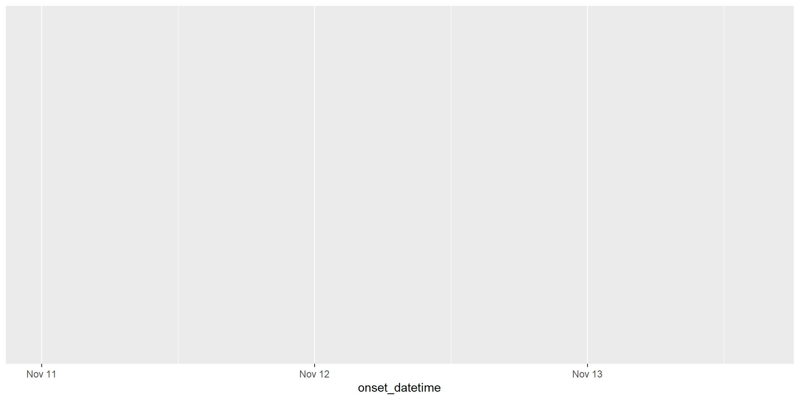
Important
La funzione aes mappa le variabili all’estetica del nostro grafico.
aestetiche principali (overview)
Important
Si usa aestetiche per visualizzare i dati.
x, y: posizione lungo gli assi x e y.
alpha: la trasparenza delle geometrie.
colour: il colore delle geometrie in base ai dati.
fill: il colore interno delle geometrie.
group: a quale gruppo appartiene una geometria.
linetype: il tipo di linea utilizzata (solid, dotted, ecc.).
shape: la forma dei punti.
size: la dimensione dei punti o delle linee.
3. Geometrie
Una volta ottenuta la tela e le mappature, possiamo aggiungere un livello geometrico. In questo caso, vogliamo aggiungere delle barre per il “tempo_nascita” (cioè, x).
linelist |># start from data, and thanggplot( # create a plotaes( # with aesthetics:x = onset_datetime ) ) +geom_bar() # drawing bars
Tip
Nella descrizione dell’aiuto di ogni geom_* ci sono i requisiti estetici che deve avere per essere usato.
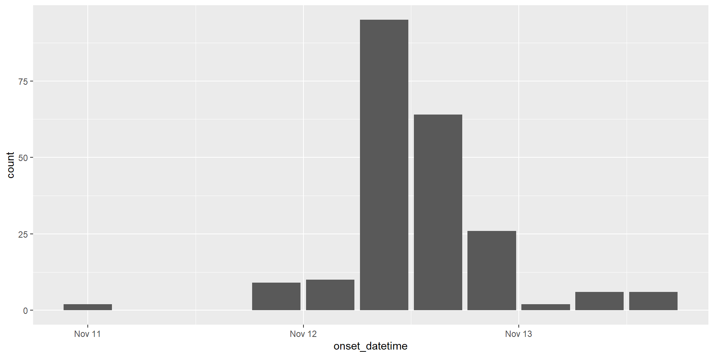
Important
Tutte le funzioni di geometria sono chiamate geom_*, con * che indica il tipo di geometria:
geom_violin: kernel di distribuzione della dispersione dei dati
geom_path: linee che collegano punti in sequenza di apparizione
mappe aestiche vs parametri aestetici parameters?
Supponiamo di voler riempire le barre di blu.
Perché questo produce barre rosse e la legenda riporta “fill” come intestazione e “blue” come livello?
linelist |># start from data, and thanggplot( # create a plotaes( # with aesthetics:x = onset_datetime,fill ="blue" ) ) +geom_bar()
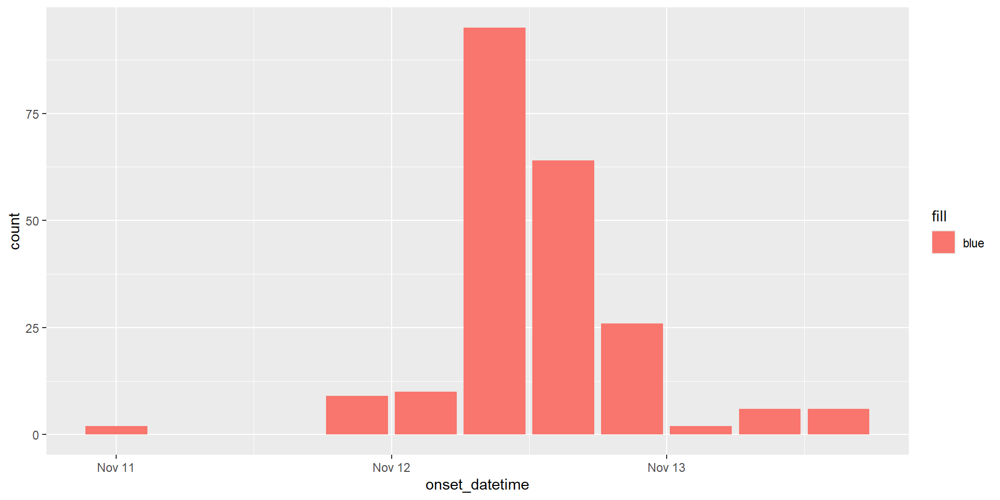
mappe aestiche vs parametri aestetici parameters!
Supponiamo di voler riempire le barre di blu.
Perché questo produce barre blu e non c’è alcuna legenda?
linelist |># start from data, and thanggplot( # create a plotaes( # with aesthetics:x = onset_datetime ) ) +geom_bar(fill ="blue")
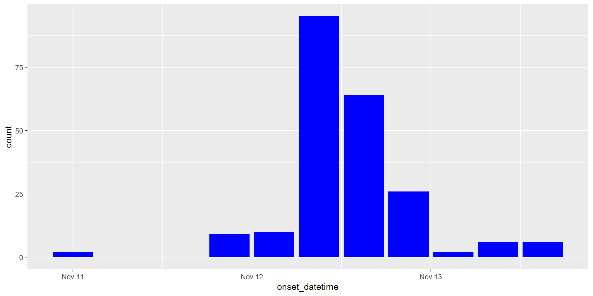
Important
Per avere un grafico a barre blu, inserire il parametro all’interno della chiamata geom_*etry e fuori dalla chiamata aes: questi sono parametri usati per impostare l’estetica a un valore fisso, come colour = "rosso" o size = 3, invece di mappare i dati all’estetica!
geom_*etrie multiple
Si possono anche aggiungere più geom_*etries uno in cima agli altri. In questo caso, potrebbe essere utile impostare aestetiche personalizzate e personalizzare la posizione dei geom.
linelist |># start from data, and thanggplot( # create a plotaes( # with aesthetics:x = onset_datetime ) ) +geom_bar(fill ="blue") +geom_bar(aes(fill = sex),position ="dodge" )
Tip
Si possono impostare anche aestetiche all’interno di un singolo geom_* senza influenzare gli altri.
Important
Vorremmo anche impostare la posizione del geom_* che stiamo creando.
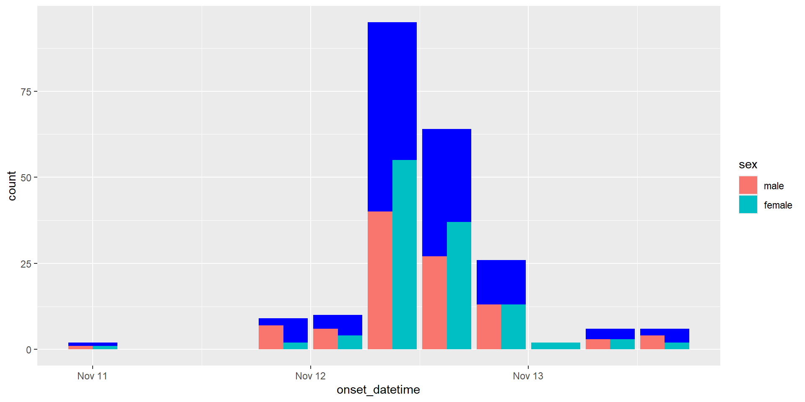
geom_*etrie multiple
Si possono anche aggiungere più geom_*etries uno in cima agli altri. In questo caso, potrebbe essere utile impostare aesthetiche personalizzate e personalizzare la posizione dei geom.
linelist |># start from data, and thanggplot( # create a plotaes( # with aesthetics:x = onset_datetime ) ) +geom_bar(aes(fill = sex),position ="dodge" )geom_bar(fill ="blue")
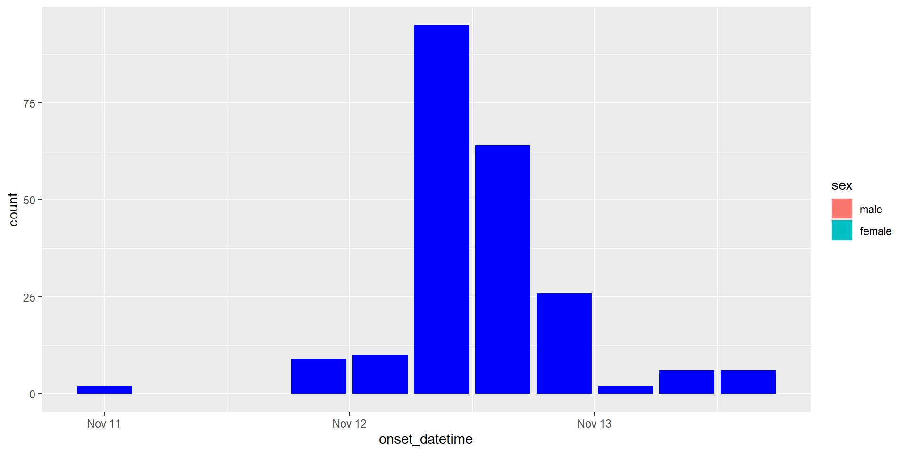
Important
I geom_* sono aggiunti in ordine, quindi l’operazione NON è commutativa!
positioni principali (overview)
Important
Si usa la position per posizionare i componenti del geom_*.
"stack": (default) più barre che occupano la stessa posizione x saranno impilate l’una sull’altra.
"dodge": affiancati da un lato all’altro.
"fill": mostra le proporzioni relative a ogni x impilando le barre e standardizzando ogni barra in modo che abbia la stessa altezza.
"jitter": aggiunge un rumore casuale a una trama rendendola più facile da leggere, a volte.
Modello base
Finora, possiamo disporre di un insieme minimo di istruzioni per definire un modello di base per le nostre trame.
Le mappature locali aestetiche sovrascrivono quelle globali!
Scale (overview)
Le scale controllano il passaggio dai dati all’estetica. Sono necessarie per avere un grafico, ma spesso vengono impostate automaticamente. Possiamo personalizzarle per avere un migliore controllo sulla trama.
linelist |># start from data, and thanggplot( # create a plotaes( # with aesthetics:x = onset_datetime ) ) +geom_bar(fill ="blue") +geom_bar(aes(fill = sex),position ="dodge" ) +scale_x_datetime(date_breaks ="12 hours",labels = scales::label_date_short() ) +scale_y_continuous(breaks = scales::breaks_pretty() )
Important
I nomi delle scale sono composti come scale_<aes>_<type>, dove <aes> è l’estetica e <type> è il tipo di scala.
see ?scale_y_continuous, and ?scale_x_datetime.
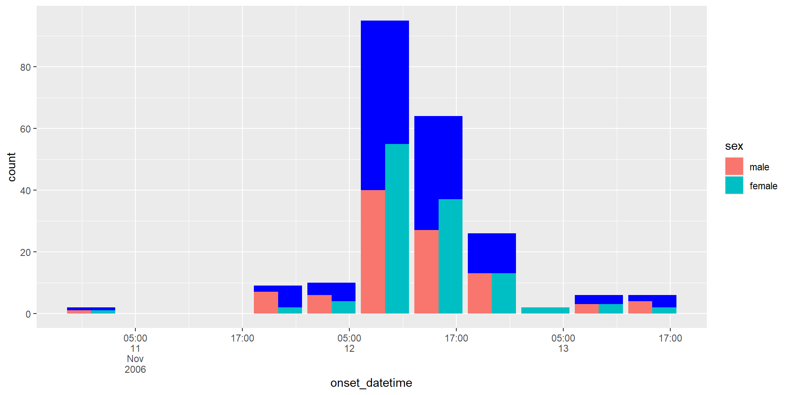
Tip
Il pacchetto scales fornisce un insieme di funzioni per personalizzare le scale. Abbiamo usato label_date_short e breaks_pretty per avere un migliore controllo sulle etichette e sulle interruzioni.
Facets (overview)
Possiamo quindi stratificare la nostra trama in base ai livelli di uno o due dati discreti nel nostro set di dati, creando trame distinte con i dati per ogni classe, visualizzati in sfaccettature distinte.
linelist |># start from data, and thanggplot( # create a plotaes( # with aesthetics:x = onset_datetime ) ) +geom_bar(fill ="blue") +geom_bar(aes(fill = sex),position ="dodge" ) +scale_x_datetime(date_breaks ="12 hours",labels = scales::label_date_short() ) +scale_y_continuous(breaks = scales::breaks_pretty() ) +facet_grid( group ~ class )
Important
facet_grid forma una matrice di pannelli definita da variabili di sfaccettatura di riga e colonna.
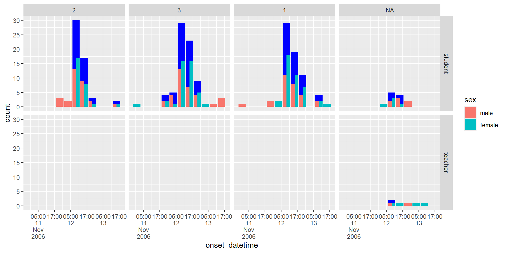
Tip
facet_grid è più utile quando si hanno due variabili discrete e tutte le combinazioni delle variabili esistono nei dati. Se si dispone di una sola variabile con molti livelli, provare con ?facet_wrap.
Sfaccettature (facet) (overview)
Possiamo quindi stratificare la nostra trama in base ai livelli di uno o due dati discreti nel nostro set di dati, creando trame distinte con i dati per ogni classe, visualizzati in sfaccettature distinte.
linelist |># start from data, and thanggplot( # create a plotaes( # with aesthetics:x = onset_datetime ) ) +geom_bar(fill ="blue") +geom_bar(aes(fill = sex),position ="dodge" ) +scale_x_datetime(date_breaks ="12 hours",labels = scales::label_date_short() ) +scale_y_continuous(breaks = scales::breaks_pretty() ) +facet_grid( group ~ class,scales ="free_y",labeller ="label_both" )
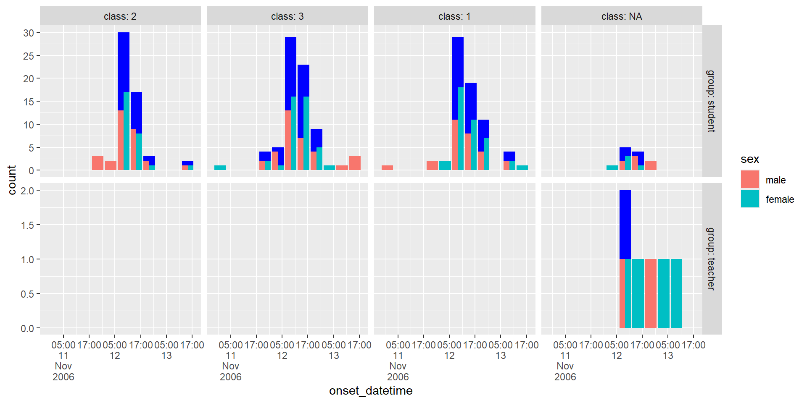
Tip
scales: le scale sono condivise tra tutte le sfaccettature (il valore predefinito è “free”), oppure variano tra le righe (“free_x”), le colonne (“free_y”) o sia le righe che le colonne (“free”)?
labeller predefinita (cioè, "label_value") etichetta le righe e le colonne con i loro nomi; "label_both" visualizza sia il nome della variabile che il valore del fattore.
Personalizzare i metadati: etichette primarie
Ora possiamo iniziare a renderlo più bello, aggiungendo e migliorando alcuni testi ed etichette, come il titolo, le etichette degli assi e della legenda e una didascalia.
linelist |># start from data, and thanggplot( # create a plotaes( # with aesthetics:x = onset_datetime ) ) +geom_bar(fill ="blue") +geom_bar(aes(fill = sex),position ="dodge" ) +scale_x_datetime(date_breaks ="12 hours",labels = scales::label_date_short() ) +scale_y_continuous(breaks = scales::breaks_pretty() ) +facet_grid( group ~ class,scales ="free_y" ) +labs(## aesthetics used titlesx ="Onset date",y ="Count (N person)",fill ="Sex",## plot metadatatitle ="Distribution of cases across days.",subtitle ="Stratified by group and class.",caption ="Data from ECDC EPIET Outbreak Investigation (https://github.com/EPIET/OutbreakInvestigation)." )
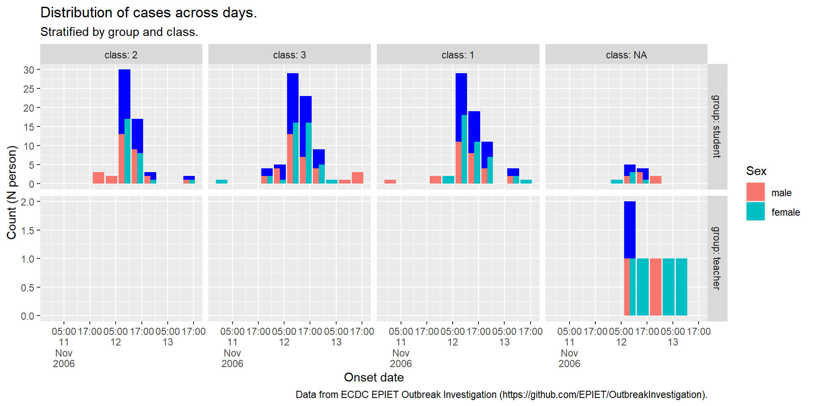
Tema (overview)
Molte altre opzioni possono essere prese in considerazione per perfezionare l’aspetto della nostra trama.
linelist |># start from data, and thanggplot( # create a plotaes( # with aesthetics:x = onset_datetime ) ) +geom_bar(fill ="blue") +geom_bar(aes(fill = sex),position ="dodge" ) +scale_x_datetime(date_breaks ="12 hours",labels = scales::label_date_short() ) +scale_y_continuous(breaks = scales::breaks_pretty() ) +facet_grid( group ~ class,scales ="free_y",labeller ="label_both" ) +labs(## aesthetics used titlesx ="Onset date",y ="Count (N person)",fill ="Sex",## plot metadatatitle ="Distribution of cases across days.",subtitle ="Stratified by group and class.",caption ="Data from ECDC EPIET Outbreak Investigation (https://github.com/EPIET/OutbreakInvestigation)." ) +theme_bw() +theme(legend.position ="top" )
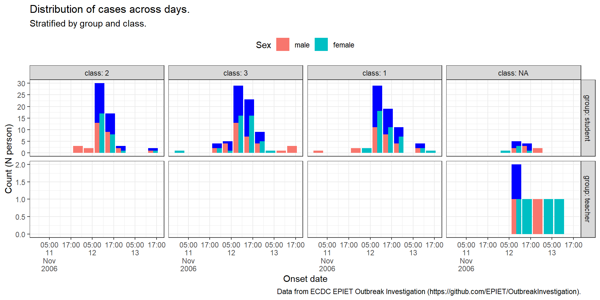
Temi: vetrina (overview)
I parametri personalizzati del tema sono molti, qui riportiamo una rappresentazione di alcuni di essi.
Le diapositive sono state realizzate utilizzando PositQuarto, sistema open-source di editoria scientifica e tecnica alimentato in R da kintr (creato da Yihui Xie ).